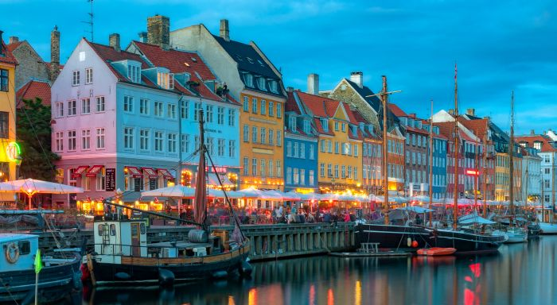
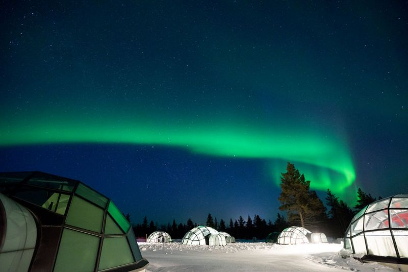

|  |  |
| 旅遊景點：著名的有市政府廣場、安瑪麗堡宮殿、卡菲蘭噴泉 克麗斯欽堡、克倫堡、腓特烈城堡、菲英島、西蘭島、哥本哈根 市政廰、美人魚塑像、新港、蒂沃利花園等。 |
旅遊景點：著名的景點有赫爾辛基、羅凡涅米聖誕老人村、卡烏 帕多利廣場、烏斯本斯基寺院、 赫爾辛基大教堂、岩石教堂、西 貝流士公園、土庫、聖誕老人村、Snow Village等。 |
| 希臘的旅遊業非常興旺。每年來希臘的外國遊客約1,600萬人次， 超過希臘的總人口數。旅遊業每年為希臘帶來約140億美元的收入 。同時他們的僑匯也是重要的外匯收入。 |
德國是世界入境遊客數量第7多的國家2012年到訪過夜遊客數量達 到4.07億人次，其中包括6,883萬外國遊客。2012年，超過3,040萬 國際遊客到訪德國。柏林為歐洲訪客數量第三高的城市 |